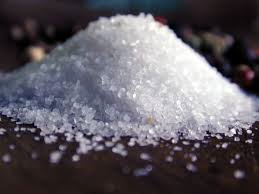

Alkohol
Före 1800-talet användes alkohol som bedövningsmedel och smärtstillande.
Förr användes alkohol mot förskylningar och idag ingår den i vissa hostmedeciner.
Svenska bönder lärde sig på 1500-talet att tillverka brännvin av säd och då ökade drickandet enormt. På
1700-talet ökade drickandet mer och även på 1800-talet och det ledde till folkhälsoproblem av sjukdomar och ökad dödlighet.
Alkohol som människor dricker idag framställs av säd, potatis, frukter och bär samt den kallas etanol.
Etanol,C2H5OH kan användas som desinfektionsmedel i exempel på sjukhus.
När man dricker alkohol går det ut i blodet och den påverkar olika organ samt det centrala nervsystemet.
Blodkärlen närmast huden vidgas vilket ger en värmekänsla och det ökar risken för avkylning.
Det bilas också mer saltsyra,HCI i magen och kan leda till magkatarr och magsår.
Med alkohol i kroppen känner personen sig gladare och mer pratsam samt lättare att prata med andra människor.
De negativa konsekvenserna är att om en person dricker mycket kan de få minnesluckor, kräkningar och personer blir
vingliga och sluddrar. Alkohol är berodendeframkallande och heter alkoholism.
Salt
Saltets kemiska formel är NaCI och salt använder vi i matlagning. Alla människor behöver salt för att överleva och vi behöver ca 3 gram per dag. För att få våra celler att fungera. Vi har idag jod i salt för vår hälsa och jod är ett viktigt grundämne som människan behöver för att reglera ämnesomsättningen. HavsSalt kommer direkt från havet och bergsalt kommer från saltavlagringar i marken.
Stearinsyra
Kemiska formeln för stearinsyra är C18H36O2. Stearinsyra är ett naturligt fett och den finns i mangosmör, ister och kakaosmör. Stearinsyra finns även i palmolja och kokosfett.
